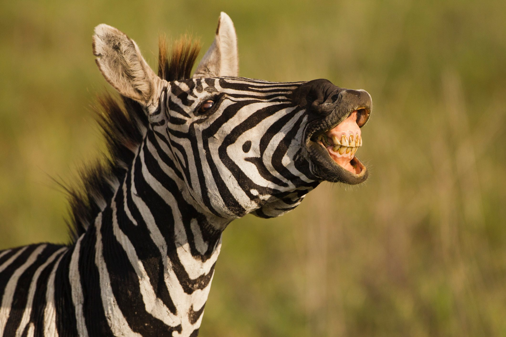

| Nume | Poza |
|---|---|
| Zebra1 |  |
| Zebra2 |  |
Zebraa🦓
Zebra este reprezentată de trei specii de animale care fac
parte din genul Equus, ordinul imparicopitatelor:
Zebra lui Grévy, Zebra de stepă, Zebra de munte. Încrucișările
dintre zebre și cai au dat naștere la „zebroide”, o variantă
intermediară între zebră și cal, și la „zebrule”, o încrucișare
între zebră și măgar.